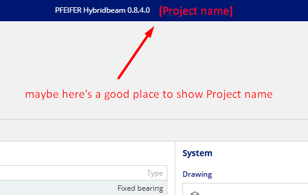
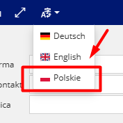
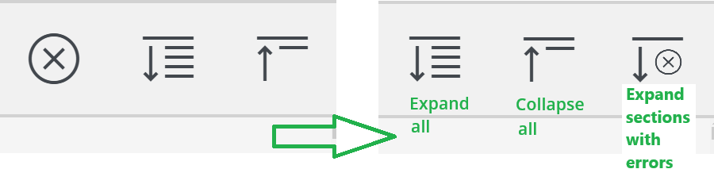

Project Name: Pfeifer-Suite-Hybridbeam
Tester Name: Pawel Wojtanowicz
Date: start: 21.02.25 | end: 28.02.25
Please note: all notes included in the table below have to be considered as UX improvements even when the test status is marked as Pass.
| Test case ID | Test name | Description | Steps | Expected result | Actual result | Notes | Status |
|---|---|---|---|---|---|---|---|
| TC001 | Save project as downloaded file | Verification of the correctness of saving the project to a file | 1. Open app 2. Click save as File |
The file saves correctly | The file saves correctly | No pop-up with path --> to consider | ✅Pass |
| TC002 | Save project as cloud file | Verification of the correctness of saving the project to a cloud file | 1. Open app 2. Click save as Cloud |
The file appears in the cloud | The file appears in the cloud | ✅Pass | |
| TC003 | Open project from downloaded file | Verification of the correctness of opening the project from downloaded file | 1. Open app 2. Click open from File |
The pointed file loaded correctly | The pointed file loaded correctly | The current project should be displayed in highlighted place, see: t003-1 --> to consider | ✅Pass |
| TC004 | Open project from cloud file | Verification of the correctness of opening the project from cloud file | 1. Open app 2. Click open from Cloud |
The pointed file loaded correctly | There are no files to choose from in the cloud | ❌ Fail | |
| TC006 | Fullscreen mode | Verification of the correctness of fullscreen mode | 1. Open app 2. Click Fullscreen icon 3. Click Fullscreen icon again |
The fullscreen mode is active after first click. The fullscreen mode is inactive after second click. |
The fullscreen mode is active after first click. The fullscreen mode is inactive after second click. |
✅Pass | |
| TC007 | Language switch | Verification of the language switch correctness | 1. Open app 2. Click language switch and change in to English 3. Click language switch and change in to Deutsch 4. Click language switch and change in to Polski |
The language has changed in to: English, German, Polish (in this order) | The language has changed in to: English, German, Polish (in this order) | 'Polskie' --> 'Polski' in dropdown list, see: tc007-1. The verification of the correctness of other translations is not considered within the scope of this test. |
✅Pass |
| TC008 | Home icon | Verification of the Home icon's correctness | 1. Open app 2. Click Home icon |
The Pfeifer-Suit 'Start user screen' is open | The Pfeifer-Suit 'Start user screen' is open | No pop-up, like: 'Please save changes' | ✅Pass |
| TC009 | New project button | Verification of the New project button's correctness | 1. Open app 2. Click New project button |
The new project is created and becomes the current one. The pop-up with 'Save changes' in between appears. | The new project is created and becomes the current one. The pop-up with 'Save changes' in between appears. | ✅Pass | |
| TC010 | Print button | Verification of the Print button's correctness | 1. Open app 2. Click Print button |
The 'File screen' is open and ready to generate report and print after | The 'File screen' is open and ready to generate report and print after | ✅Pass | |
| TC011 | Undo/Redo buttons | Verification of the Undo/Redo button's correctness | 1. Open app 2. Click Fill in button 3. Click Undo button 4. Click Redo button |
Inputs filled in. Changes undo - inputs empty. Changes redo - inputs filled in. | Inputs filled in. Changes undo - inputs empty. Changes redo - inputs filled in. | ✅Pass | |
| TC012 | Fill-in feature | Verification of the Fill-in feature's correctness | 1. Open app 2. Click Fill-in button in Customer section 3. Click Fill-in button in Contractor section |
Inputs filled in | Inputs filled in | There is no way to clear inputs automatically. The Clear fields feature with a toggle needed --> toggle to consider, see: tc012-1 | ✅Pass |
| TC013 | 'Expand/Collapse all' feature | Verification of the 'Expand/Collapse all' feature's correctness | 1. Open app 2. Click Collapse button 3. Click Expand button |
Collapse button - all sections collapse. Expand button - all sections expand. | Collapse button - all sections collapse. Expand button - all sections expand. | Rearrangement of the icons, new icon for Expand errors, see: tc013-1 | ✅Pass |
| TC014 | 'Expand error sections' feature | Verification of the 'Expand error sections' feature's correctness | 1. Open app 2. Choose a big value of one of the actions to have unsuccessful proofs 3. Click 'Calculate' button 4. Click Expand sections with errors on Beam tab |
Sections with unsuccessful proofs are collapsed | Sections with unsuccessful proofs are collapsed | Button visibility set to 'only when Proofs are displayed'. Button tooltip: 'Expand only unsuccessful proofs'. --> to consider, will be more user-friendly, see: tc014-1 | ✅Pass |